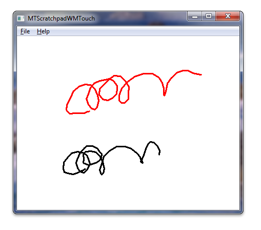

title: Windows Touch Scratchpad Sample (C++) description: The Windows Touch Scratchpad sample shows how to use Windows Touch messages to draw traces of the touch points to a window. ms.assetid: 6c4b4595-1e95-499c-b045-b5ae01aa5a6e keywords:
The Windows Touch Scratchpad sample shows how to use Windows Touch messages to draw traces of the touch points to a window. The trace of the primary finger, the one that was put on the digitizer first, is drawn in black. Secondary fingers are drawn in six other colors: red, green, blue, cyan, magenta, and yellow. The following image shows how the application could look while running.

For this application, the window is registered as a touch window, touch messages are interpreted to add touch points to stroke objects, and ink strokes are rendered to the screen in the WM_PAINT message handler.
The following code shows how the window is registered as a touch window.
// Register application window for receiving multitouch input. Use default settings.
if(!RegisterTouchWindow(hWnd, 0))
{
MessageBox(hWnd, L"Cannot register application window for multitouch input", L"Error", MB_OK);
return FALSE;
}
The following code shows how touch messages are used to add touch points to ink strokes.
// WM_TOUCH message handlers
case WM_TOUCH:
{
// WM_TOUCH message can contain several messages from different contacts
// packed together.
// Message parameters need to be decoded:
unsigned int numInputs = (unsigned int) wParam; // Number of actual per-contact messages
TOUCHINPUT* ti = new TOUCHINPUT[numInputs]; // Allocate the storage for the parameters of the per-contact messages
if(ti == NULL)
{
break;
}
// Unpack message parameters into the array of TOUCHINPUT structures, each
// representing a message for one single contact.
if(GetTouchInputInfo((HTOUCHINPUT)lParam, numInputs, ti, sizeof(TOUCHINPUT)))
{
// For each contact, dispatch the message to the appropriate message
// handler.
for(unsigned int i=0; i<numInputs; ++i)
{
if(ti[i].dwFlags & TOUCHEVENTF_DOWN)
{
OnTouchDownHandler(hWnd, ti[i]);
}
else if(ti[i].dwFlags & TOUCHEVENTF_MOVE)
{
OnTouchMoveHandler(hWnd, ti[i]);
}
else if(ti[i].dwFlags & TOUCHEVENTF_UP)
{
OnTouchUpHandler(hWnd, ti[i]);
}
}
}
CloseTouchInputHandle((HTOUCHINPUT)lParam);
delete [] ti;
}
break;
The following code shows how the ink strokes are drawn to the screen in the WM_PAINT message handler.
case WM_PAINT:
hdc = BeginPaint(hWnd, &ps);
// Full redraw: draw complete collection of finished strokes and
// also all the strokes that are currently in drawing.
g_StrkColFinished.Draw(hdc);
g_StrkColDrawing.Draw(hdc);
EndPaint(hWnd, &ps);
break;
The following code shows how the stroke object renders strokes to the screen.
void CStroke::Draw(HDC hDC) const
{
if(m_nCount < 2)
{
return;
}
HPEN hPen = CreatePen(PS_SOLID, 3, m_clr);
HGDIOBJ hOldPen = SelectObject(hDC, hPen);
Polyline(hDC, m_arrData, m_nCount);
SelectObject(hDC, hOldPen);
DeleteObject(hPen);
}
Windows Touch Scratchpad Sample (C#), Multi-touch Scratchpad Application (WM_TOUCH/C#), Multi-touch Scratchpad Application (WM_TOUCH/C++), Windows Touch Samples